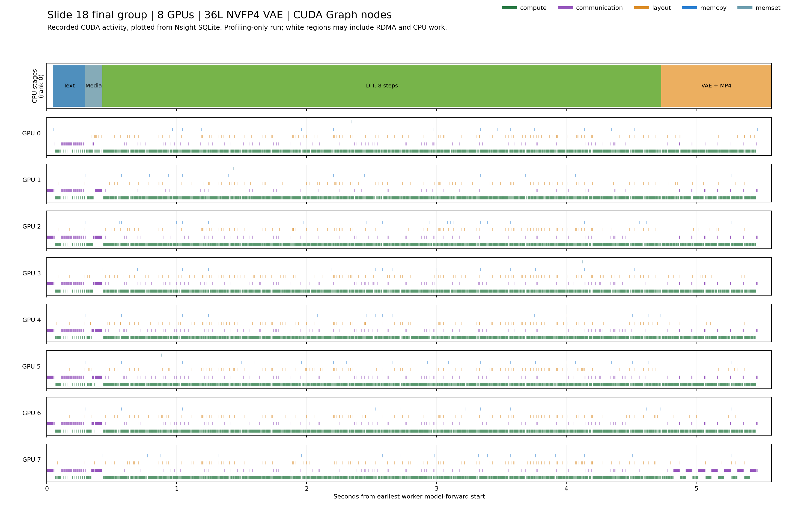
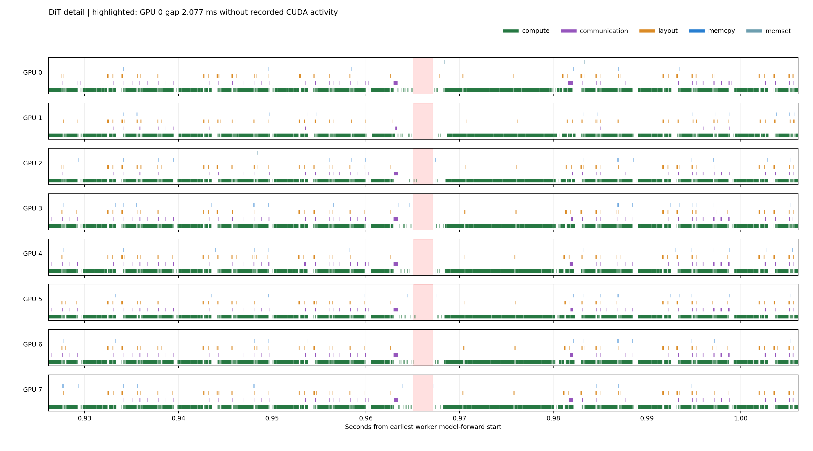
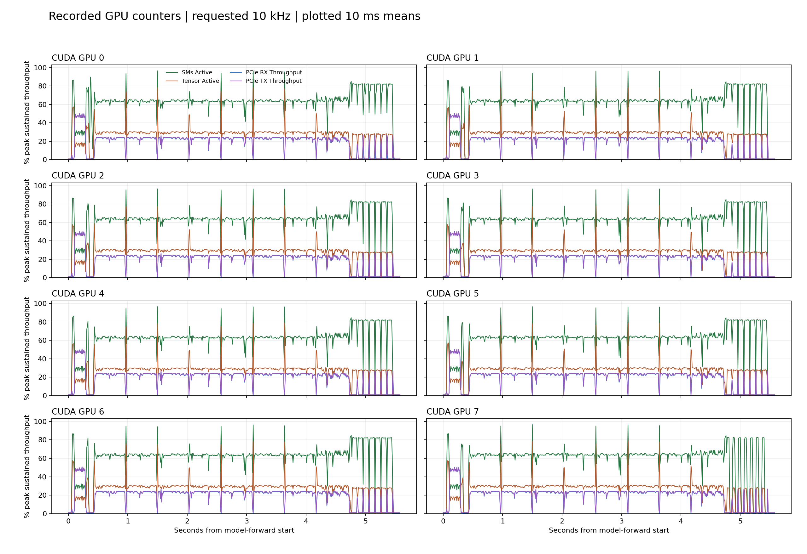

NSIGHT SYSTEMS · 27 OCTOBER 2026 · PROFILING ONLY
Slide 18 final group: where gaps remain
One warmed request on the original eight SM120 GPUs: 960 × 544, 124 frames at 24 fps, seed 43, eight model evaluations. The final configuration includes native FP4 attention, RDMA, 2/3/2 head bands, compute-band CUDA Graph, and the 36-layer NVFP4 VAE decoder with MP4 pre-encoding.
Original benchmark median5.418 s
Profiled HTTP request5.664 s
DiT without CUDA activity508–537 msper GPU, cumulative
Exposed transport proxy324–338 msper GPU, cumulative
Gaps remain, especially at the first input band and final output band. The DiT envelope is about 4.302 seconds. Its communication transport proxy overlaps compute by 72.9–74.0%. These are diagnostic intervals, not a predicted speedup: RDMA can run while CUDA kernel/copy lanes are blank, and overlapping kernels do not imply full SM utilization.
The collection-disabled controls immediately before and after the trace took 5.469 s and 5.483 s. They used the same profiling launcher and NVTX labels. The profiled output exactly matches the original final-group decoded video and audio hashes. The 5.418 s published benchmark remains unchanged.
Full request timeline

Plotted directly from Nsight SQLite; this is a derived figure, not a screenshot of the Nsight GUI. Separate lanes preserve overlapping compute, communication kernels, layout, memcpy, and memset. Dense overview rendering can hide short gaps; open the original report to zoom to individual kernels.
DiT gaps by GPU
| CUDA GPU | DiT envelope (s) | No CUDA activity (ms) | No compute (ms) | Exposed transport (ms) | Transport overlap | Largest CUDA gap (ms) |
|---|
| 0 | 4.302 |
519.1 | 811.4 |
331.2 |
73.3% | 2.077 |
| 1 | 4.302 |
521.5 | 802.3 |
337.6 |
72.9% | 3.382 |
| 2 | 4.302 |
508.0 | 793.4 |
331.9 |
73.3% | 1.790 |
| 3 | 4.302 |
525.0 | 818.5 |
323.6 |
74.0% | 2.324 |
| 4 | 4.302 |
537.0 | 840.5 |
325.9 |
73.7% | 2.234 |
| 5 | 4.302 |
533.3 | 832.7 |
324.5 |
73.9% | 2.594 |
| 6 | 4.302 |
525.8 | 817.1 |
328.9 |
73.5% | 2.101 |
| 7 | 4.302 |
511.7 | 796.7 |
330.9 |
73.4% | 3.473 |
No CUDA activity is the complement of the union of recorded kernels, memcpy, and memset inside each worker's CPU NVTX stage. No compute additionally excludes NCCL/Ulysses synchronization and recognized layout kernels. Stage boundaries are CPU envelopes; asynchronous GPU work may cross them. Per-GPU values must not be summed as end-to-end time.
A gap at millisecond scale

The highlight marks a 2.077 ms gap on CUDA GPU 0 around 0.965 s from the earliest worker's model-forward start. The trace alone does not identify the responsible Python call or establish that this entire gap can be removed.
Head-band transport: GPU 0
| Direction : band : heads | Transport proxy (ms) | Exposed proxy (ms) | Compute overlap |
|---|
| in:0:2 | 254.3 | 168.1 | 33.9% |
| in:1:3 | 377.9 | 22.6 | 94.0% |
| in:2:2 | 253.4 | 9.0 | 96.4% |
| out:0:2 | 92.6 | 13.1 | 85.8% |
| out:1:3 | 171.0 | 28.6 | 83.3% |
| out:2:2 | 90.3 | 89.7 | 0.7% |
The first input band exposes about 168 ms and the final output band about 90 ms on GPU 0. Middle input bands overlap well. These boundaries are useful next investigation points for producer readiness and output consumption.
For each of 2,400 exchanges per GPU, the conservative transport proxy starts when the opening cudaEventSynchronize returns and ends at the host start of the closing UlyssesPcieBarrier launch. It includes host post/poll/flush work and is not exact NIC wire time. Overlapping intervals are merged for the per-GPU total. Per-slot rows can overlap and are not additive.
Recorded hardware activity

Requested GPU sampling: 10 kHz; curves show 10 ms means. Counters are device-wide. NIC metrics are also included in the original report and the transport JSON.
Trace validation and limits
All eight worker requests and post-request flush ranges are present. Each GPU has 1,200 Graph launches, 79,200 Graph kernel nodes, 2,400 annotated head exchanges, and 4,800 Ulysses barriers. Every exchange matched both synchronization boundaries and both barrier launches. The VAE runtime reports 36 layers and 216 NVFP4 linear modules; other decode arithmetic uses BF16 autocast.
Nsight collection warnings retained
Nsight reports possible incomplete CUDA, NVTX, and OS-runtime collection and no CPU scheduling trace. The expected in-request counts above match, but these checks do not prove that every possible event was captured. The raw report retains these warnings; gap measurements should be interpreted with them. No CPU stack sampling or context-switch trace was captured.
- CUDA profiling might have not been started correctly. (2 records)
- No CUDA events collected. Does the process use CUDA? (3 records)
- No NVTX events collected. Does the process use NVTX? (3 records)
- Not all CUDA events might have been collected. (9 records)
- Not all NVTX events might have been collected. (10 records)
- Not all OS runtime libraries events might have been collected. (10 records)
- Scheduling information is absent. The thread activity is deduced based on OS runtime libraries traces. This is inaccurate and does not take into account asynchronous interrupts and exception faults. (1 records)
Open and reproduce the analysis
Open the .nsys-rep file in Nsight Systems 2025.3.2 or newer. Expand CUDA Graph nodes, CUDA GPU lanes, NVTX H3.DiT.8_steps, and qad.head.exchange ranges. The downloaded analysis bundle contains source scripts, measurements, and figures. It does not include model weights.
nsys export --type=sqlite --output=trace.sqlite H3_Slide18_Final_8GPU_NVFP4_36L_NodeTrace.nsys-rep
python3 -m pip install numpy matplotlib
python3 analyze_final_profile.py .
python3 analyze_final_exchanges.py .
Place the exported trace.sqlite beside the extracted bundle's capture-result.json. The two analysis scripts read the trace and regenerate the figures and summaries.